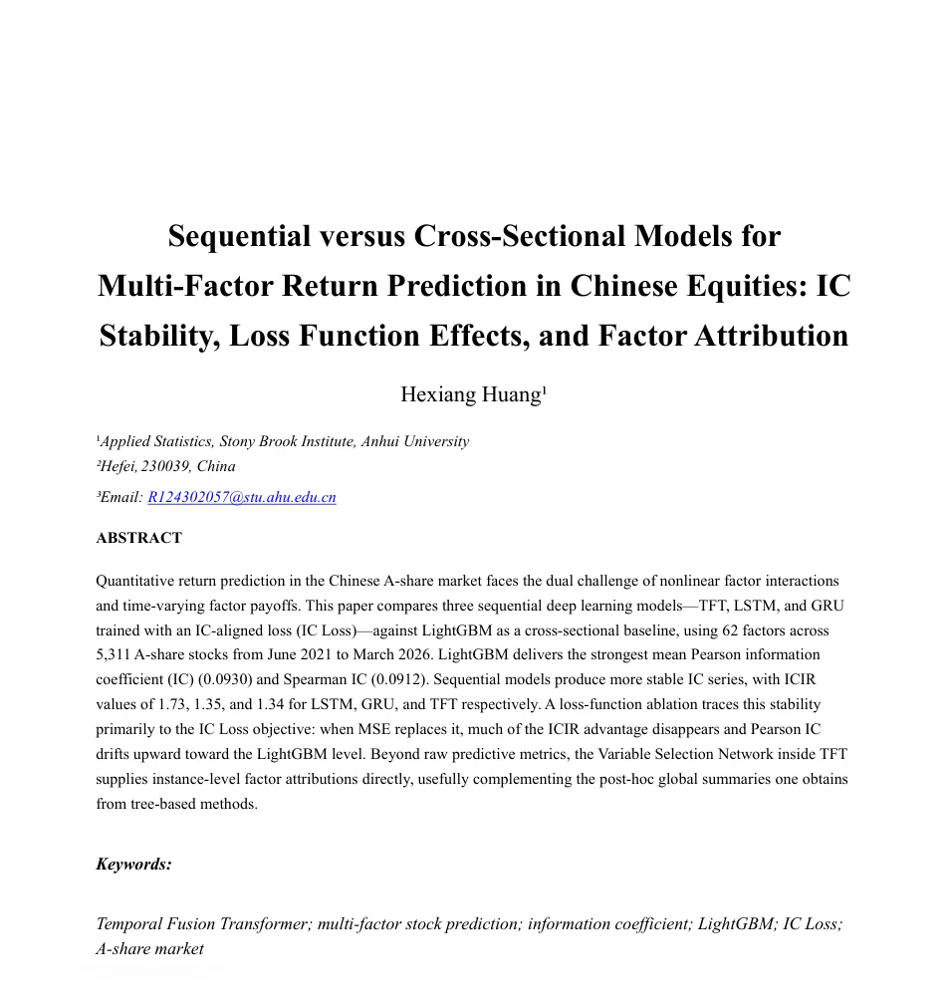
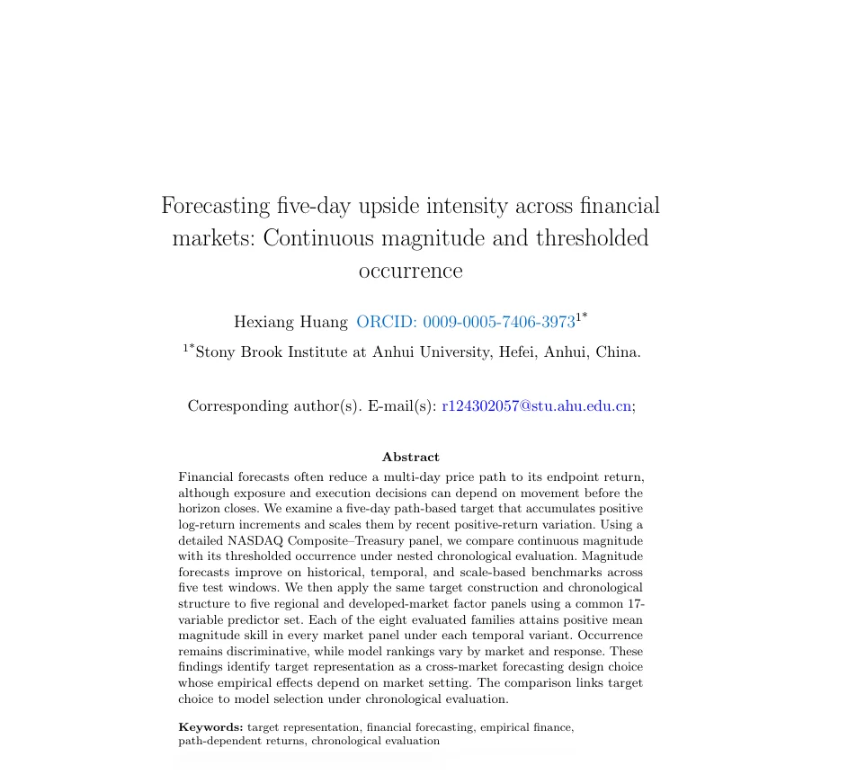
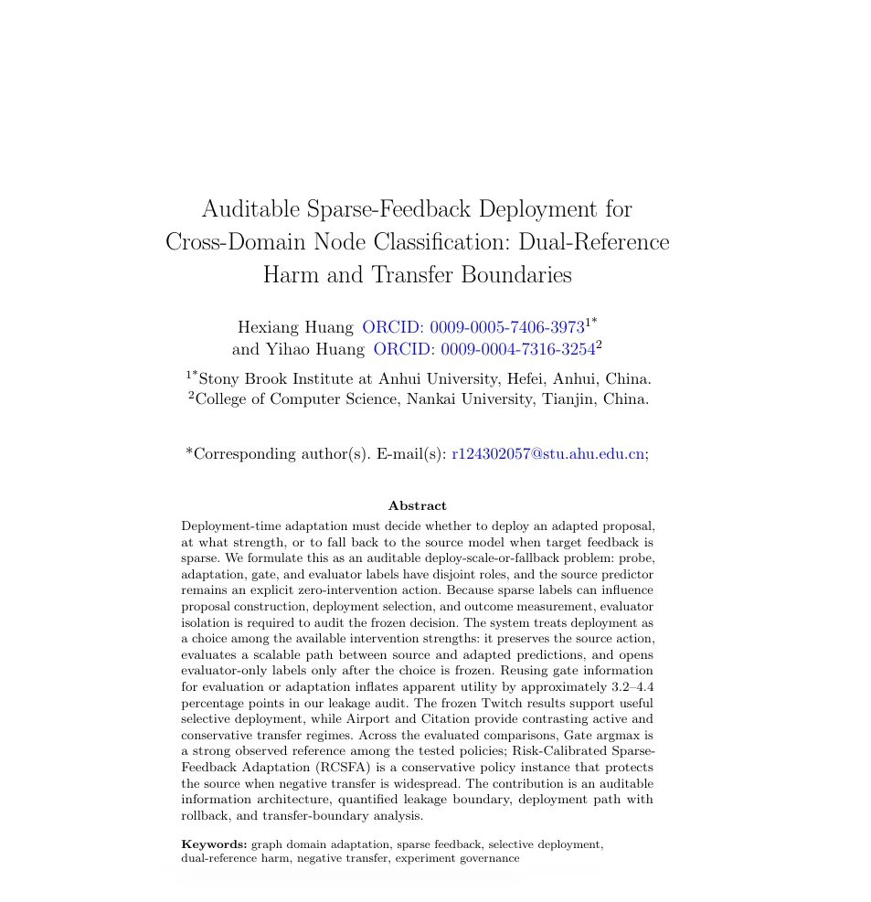
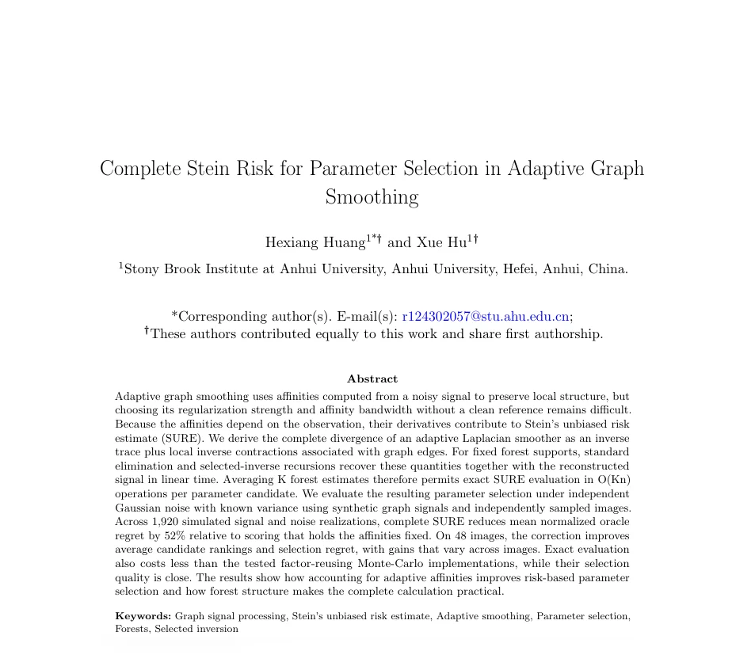

论文 01
中国股票多因子收益预测中的序列模型与截面模型比较：IC 稳定性、损失函数效应与因子归因
BDCIA · 第四届大数据、计算智能与应用国际会议
安徽大学应用统计学专业 2024 级本科在读。
研究方向聚焦统计学、机器学习与量化金融的交叉领域 —— 多因子模型、深度学习、大语言模型可解释性。

BDCIA · 第四届大数据、计算智能与应用国际会议

计算经济学（Computational Economics）

知识与信息系统（KAIS）

信号、图像与视频处理（SIVP）
仅展示首页摘要与关键词预览 · 投稿状态更新于 2026.10.12